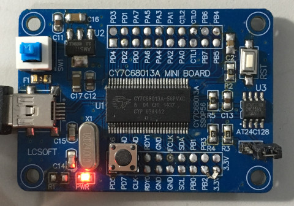
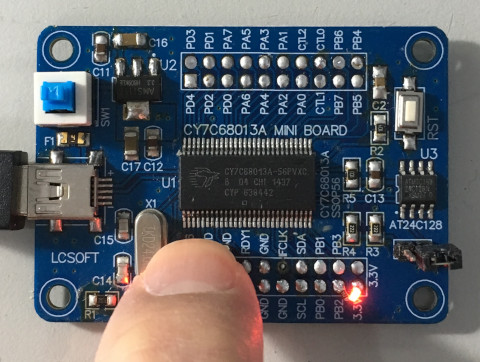

https://www.cypress.com/file/126446/download
Output Enable

I/O

main.s
參考資訊：
https://www.cypress.com/file/126446/download
Output Enable
I/O
main.s
oeb set 0xb3
oed set 0xb5
.org 0h
jmp _start
.org 0x100
_start:
mov oeb, #0x04
mov oed, #0x00
loop:
mov c, p3.6
mov p1.2, c
jmp loop
.end
完成

